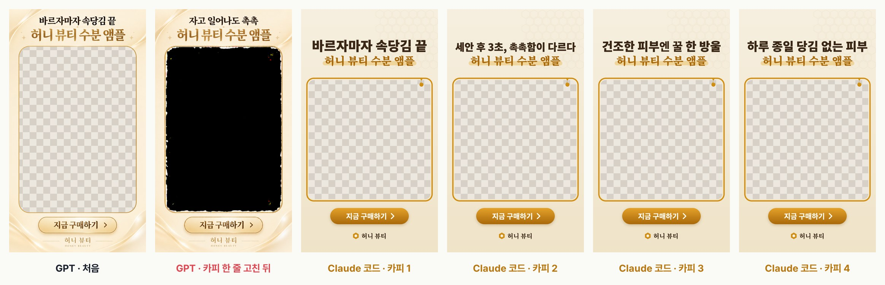

EP.17 · 액자형 광고 소재
요즘 그 액자형 소재,
요즘 그 액자형 소재,
편집 없이 뽑아요
위엔 카피, 아래엔 버튼, 가운데로 영상이 비치는 그 소재요. 사실 세로 영상 위에 가운데가 뚫린 PNG 한 장을 얹은 거예요. 이 프레임을 이미지 AI 말고 코드로 그려 달라고 하면, 창 위치는 그대로 두고 카피만 바꾼 소재를 여러 장 뽑고 MP4까지 받을 수 있어요.
01요청 문장 전문
Claude(claude.ai) 채팅에 그대로 붙여 넣었어요. 카피·브랜드·색만 내 것으로 바꾸세요. 결과는 채팅 옆 미리보기 페이지로 나오고, 페이지의 버튼으로 내려받아요.
① 프레임 PNG를 코드로 그리기
인스타 릴스 광고용 액자형 프레임 PNG를 코드로 그려 줘(이미지 생성 말고). 크기 1080x1920 세로. 위쪽에 큰 카피 두 줄 '바르자마자 속당김 끝' / '허니 뷰티 수분 앰플', 아래쪽에 '지금 구매하기' 버튼과 '허니 뷰티' 로고. 가운데는 세로 영상이 비쳐 보이도록 투명하게 비워 줘. 배경은 크림색. 투명 PNG로 내려받는 버튼도 달아 줘.
② 카피 여러 장 + 영상 얹어 MP4로
여기에 세로 영상을 올리면 이 프레임을 얹은 MP4로 바로 내려받게 해 줘. 그리고 첫 줄 카피를 줄마다 하나씩 여러 개 넣으면, 카피별 프레임 PNG를 한 번에 받을 수 있게 해 줘.
💡 ②를 보내면 같은 페이지에 '첫 줄 카피' 칸(한 줄에 하나), '전체 카피 PNG 받기(ZIP)', '영상 올리기 → MP4로 만들기'가 생겨요. 실제로 해 보니 ①·② 모두 2분 안쪽이었어요(②는 1분 49초).
02실제로 돌려 본 결과

같은 요청을 ChatGPT 이미지 생성에도 보내 봤어요
한글 카피는 깨지지 않았고 가운데도 진짜 투명이었어요. 다만 크기가 1080×1920이 아니라 941×1672로 나왔고, "다른 건 그대로 두고 첫 줄만 바꿔 줘"라고 하니 투명했던 창이 검게 채워진 이미지가 나왔어요. 코드로 그린 쪽은 정확히 1080×1920, 카피를 바꿔도 창 위치가 그대로예요.
03프레임 규격
- 캔버스 1080 × 1920(9:16), 투명 PNG(알파 채널).
- 이번 예시의 투명 창: x 60–1020, y 560–1500(960 × 940, 모서리 40px). 위 카피·아래 버튼은 창 밖에 둬요.
- 릴스 화면은 위쪽 약 220px(계정·메뉴), 아래쪽 약 340px(캡션·버튼), 오른쪽 아이콘 줄이 가려져요. 버튼·로고가 아래 캡션에 걸리면 "버튼을 위로 올려 줘"라고 다시 요청하세요. 페이지의 '릴스 UI 가림 영역 표시'로 미리 볼 수 있어요.
04MP4로 받을 때 꼭
- 브라우저에서 실시간으로 녹화해요. 30초 영상이면 30초 걸리고, 녹화 중에 탭을 내리면 끊길 수 있어요.
- 최신 Chrome·Safari에서는 MP4(H.264 + AAC, 1080×1920)로 나왔어요. Firefox 등에서는 WebM으로 저장돼요. 인스타에는 MP4로 올리세요.
- 실시간 재인코딩이라 화질이 편집 툴보다 조금 떨어질 수 있고, 프레임이 가끔 끊길 수 있어요(시험 결과: 8초에 0.05초 넘게 벌어진 곳 13번). 빠른 시안·테스트용으로 쓰고, 본 집행 소재는 PNG를 편집 툴에서 영상 위에 얹는 쪽이 안전해요.
- 저장할 때 claude.ai가 "파일을 다운로드하도록 허용할까요?"를 물어요. '파일 저장'을 직접 눌러야 받아져요.
05출처
- 2026-10-24 claude.ai(Claude) · ChatGPT(Plus) 이미지 생성으로 직접 시험한 결과예요.
- 영상 속 화면은 예시예요. 소재는 가상 브랜드 '허니 뷰티'예요.
실무에서 바로 쓰는 AI 활용법, 하나씩 올려요.
대행사에서 AI 교육하는 현직 마케터가 직접 써 보고 정리해요.
인스타에서 팔로우